Mục tiêu học tập
Khi học xong Chương 9, bạn cần làm được từng mục dưới đây. Nhãn cho biết mục đó được trình bày ở phần nào.
- 9.1Phân biệt ứng suất và biến dạng.
- 9.1Nhận biết ba loại ứng suất chính.
- 9.2Phân biệt biến dạng giòn, biến dạng dẻo và biến dạng đàn hồi.
- 9.3.2Mô tả ký hiệu bản đồ địa chất dùng cho đường phương và hướng dốc của lớp đá.
- 9.4Gọi tên và mô tả các kiểu nếp uốn.
- 9.5Phân biệt ba kiểu đứt gãy chính và mô tả chuyển động tương ứng.
- 9.6.1Giải thích mối liên hệ giữa bật đàn hồi và động đất.
- 9.6.3Mô tả các loại sóng địa chấn và cách đo chúng.
- 9.6.4Giải thích con người có thể gây ra động đất kích thích như thế nào.
- 9.7.1Mô tả cách địa chấn kế hoạt động để ghi sóng động đất.
- 9.7.1Từ bản ghi địa chấn kế, xác định chấn tâm của một trận động đất.
- 9.7.4Giải thích sự khác nhau giữa độ lớn và cường độ động đất.
- 9.8.1Liệt kê các yếu tố của động đất quyết định mức rung lắc mặt đất và mức phá hủy.
- 9.8.5Nhận biết các tai biến thứ sinh của động đất.
- 9.9Mô tả các trận động đất lịch sử đáng chú ý.
Cách dùng tài liệu này
Các từ được gạch chân là thuật ngữ. Bấm vào một từ, hoặc mở Thuật ngữ ở góc dưới bên phải, để đọc và tìm mọi định nghĩa trong chương. Chương gồm hai nửa chung một ý: đá thay đổi hình dạng khi có lực tác dụng lên nó. Đá bị uốn cong và nứt vỡ chậm tạo ra nếp uốn và đứt gãy (9.1–9.5); đá vỡ đột ngột giải phóng năng lượng thành động đất (9.6–9.9).
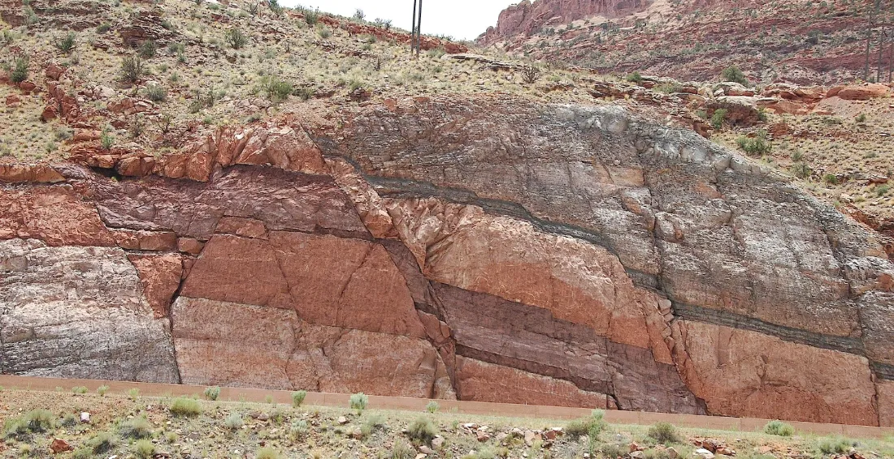
xảy ra khi lực tác dụng vượt quá độ bền bên trong của đá và làm thay đổi hình dạng của đá. Các lực này gọi là , còn những thay đổi vật lý do chúng gây ra gọi là . Lực kiến tạo, trọng lực và sự xâm nhập của các thể pluton magma đều gây biến dạng trong đá, gồm nếp uốn, khe nứt và đứt gãy. Khi đá chịu ứng suất cắt lớn bị vỡ do biến dạng giòn nhanh, năng lượng được giải phóng dưới dạng : đó là .
9.1Ứng suất và biến dạng
Ứng suất là lực tác dụng trên một đơn vị diện tích; biến dạng là sự thay đổi vật lý do ứng suất gây ra. Khi ứng suất lớn hơn độ bền bên trong của đá, biến dạng thể hiện dưới dạng thay đổi thể tích và/hoặc hình dạng của đá, hoặc nứt vỡ. Có ba loại ứng suất (Hình 9.2):
- : các lực kéo ngược chiều nhau; đá bị kéo giãn và mỏng đi.
- : các lực đẩy vào nhau; đá bị uốn nếp và dày lên.
- : các lực tác dụng ngang qua nhau; các khối hoặc vùng đá trượt qua nhau.
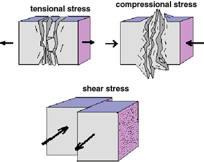
| Loại ứng suất | Ranh giới mảng (Học phần 2) | Biến dạng tạo ra | Kiểu đứt gãy và dịch chuyển |
|---|---|---|---|
| Kéo | Phân kỳ | Giãn dài và mỏng đi | Thuận |
| Nén | Hội tụ | Rút ngắn và dày lên | Nghịch |
| Cắt | Chuyển dạng | Xé rách | Trượt bằng |
Tự kiểm tra: Bài kiểm tra Mục 9.1 trong giáo trình (tiếng Anh) ↗
9.2Các kiểu biến dạng
Khi đá chịu ứng suất, biến dạng có thể là đàn hồi, dẻo hoặc giòn; tên gọi chung cho sự thay đổi này là .
- có thể hồi phục khi thôi tác dụng ứng suất, như dây cao su bị kéo rồi bật trở lại.
- là vĩnh viễn: vật liệu không thể trở lại hình dạng ban đầu, như thanh kim loại bị uốn quá mức. Điểm mà tại đó giới hạn biến dạng đàn hồi bị vượt qua và biến dạng trở thành vĩnh viễn là .
- là một điểm không thể quay lại khác: đá mất tính toàn vẹn và nứt vỡ khi ứng suất tăng dần.
Đá biến dạng theo kiểu nào phụ thuộc vào áp lực lỗ rỗng, tốc độ biến dạng, độ bền của đá, nhiệt độ, cường độ ứng suất, thời gian và áp suất vây quanh:
- : áp lực do chất lưu trong các khoảng trống (lỗ rỗng) bên trong đá hoặc trầm tích tác dụng lên đá.
- : mức độ nhanh của quá trình biến dạng. Tác dụng ứng suất từ từ giúp uốn cong một thanh gỗ dễ hơn mà không làm gãy nó.
- : mức độ dễ biến dạng của đá dưới ứng suất. Đá phiến sét có độ bền thấp; granit có độ bền cao.
- Nhiệt độ: làm lạnh khiến vật liệu cứng hơn và dễ biến dạng giòn; làm nóng khiến vật liệu dẻo hơn, như thủy tinh nung nóng có thể uốn và kéo dài.
| Yếu tố | Phản ứng biến dạng |
|---|---|
| Tăng nhiệt độ | Dẻo hơn |
| Tăng tốc độ biến dạng | Giòn hơn |
| Tăng độ bền của đá | Giòn hơn |
Tự kiểm tra: Bài kiểm tra Mục 9.2 trong giáo trình (tiếng Anh) ↗
9.3Bản đồ địa chất
là hình biểu diễn hai chiều các thành hệ và cấu trúc địa chất trên bề mặt Trái Đất: thành hệ, đứt gãy, nếp uốn, lớp đá nghiêng và loại đá. là các đơn vị đá có thể nhận biết và vẽ được trên bản đồ; mỗi thành hệ được thể hiện bằng một màu và một ký hiệu. Xem ví dụ tại trình xem bản đồ địa chất của Cục Địa chất Utah (tiếng Anh) ↗.
Đọc ký hiệu thành hệ
Một hoặc vài chữ cái đầu được viết hoa và cho biết kỷ địa chất của thành hệ; có nhiều hơn một chữ hoa nghĩa là thành hệ trải qua nhiều hơn một kỷ. Các chữ thường theo sau là chữ viết tắt của tên thành hệ, mô tả loại đá, hoặc cả hai. Ví dụ trên ảnh Nếp lồi Virgin (Hình 9.8): Jn = Cát kết Navajo tuổi Jura, Trc = Hệ tầng Chinle tuổi Trias, Pk = Hệ tầng Kaibab tuổi Permi.
9.3.1 Mặt cắt
là hình diễn giải cấu trúc dưới mặt đất, dựa trên số liệu đo trên mặt và dưới sâu. Bản đồ thể hiện địa chất trên mặt phẳng nằm ngang; mặt cắt thể hiện địa chất trên mặt phẳng thẳng đứng. Hình 9.7 và 9.14 bên dưới là các mặt cắt. Xem thêm: AAPG wiki (tiếng Anh) ↗.
9.3.2 Đường phương và hướng dốc
Đường phương và hướng dốc mô tả định hướng của các lớp đá so với phương bắc–nam và so với mặt nằm ngang (Hình 9.4).
- : hãy hình dung nước đọng trên một lớp đá nghiêng. Mép nước nằm ngang và chỉ theo một hướng la bàn, lệch một góc so với hướng bắc hoặc nam thật; góc đó, đo bằng loại la bàn chuyên dụng, chính là đường phương. N 30° E (đọc là "bắc 30 độ đông") nghĩa là đường nằm ngang chỉ về phía đông bắc, lệch 30° so với hướng bắc thật.
- : góc mà lớp đá cắm xuống lòng đất so với mặt nằm ngang, cùng với hướng lớp đá đi xuống, ví dụ 45° ĐN (45° SE). Hướng dốc là hướng một viên bi sẽ lăn nếu đặt lên lớp đá rồi thả ra. Lớp nằm ngang có góc dốc 0°; lớp thẳng đứng có góc dốc 90°.
- Đường phương cùng hướng dốc và góc dốc tạo thành của đá. Trên bản đồ, ký hiệu trông như chữ T hoa với thanh ngang rất rộng và thân ngắn: thanh ngang được vẽ theo góc của đường phương so với hướng bắc thật, thân chỉ về phía cắm xuống, và con số bên cạnh là góc dốc.
Xem: Folds, Dip and Strike (video, tiếng Anh) ↗ · Tự kiểm tra: Bài kiểm tra Mục 9.3 ↗
9.4Nếp uốn
địa chất là các lớp đá bị uốn cong do biến dạng dẻo. Chúng thường hình thành do nén ép ở dưới sâu, nơi nhiệt độ và áp suất vây quanh cao cho phép đá biến dạng dẻo.
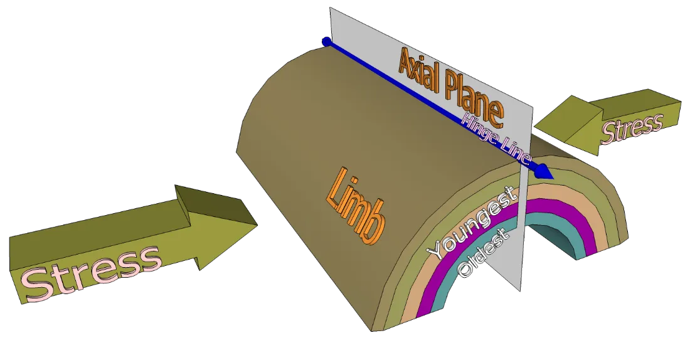
Nếp uốn được mô tả theo định hướng của các bộ phận:
- : mặt phẳng chia nếp uốn thành hai nửa.
- : đường mà dọc theo đó lớp đá bị uốn, là giao tuyến của mặt trục với các lớp bị uốn.
- : chạy theo đường uốn cong mạnh nhất của nếp uốn.
- : hai bên của nếp uốn.
Độ nghiêng của mặt trục cho bốn kiểu nếp uốn (Hình 9.6). có mặt trục thẳng đứng, hai cánh nghiêng với góc bằng nhau nhưng ngược hướng. có mặt trục nghiêng, hai cánh nghiêng với góc khác nhau. có mặt trục nghiêng dốc, cả hai cánh cùng nghiêng về một hướng, thường với góc khác nhau. có mặt trục nằm ngang hoặc gần nằm ngang. Khi trục nếp uốn cắm xuống lòng đất, nếp uốn đó là .
Nếp uốn chia thành năm loại: nếp lồi, nếp lõm, nếp oằn, vòm và bồn địa (Bảng 9.3).
| Nếp uốn | Hình dạng | Hướng cắm của lớp | Tuổi đá trên bản đồ | Ví dụ ở Utah |
|---|---|---|---|---|
| Hình vòm (chữ A), lồi lên trên | Xuống và ra xa trục | Cổ nhất ở giữa | Nếp lồi Virgin | |
| Hình máng (chữ U), lõm lên trên | Xuống và vào phía trục | Trẻ nhất ở giữa | (Mô hình Hệ tầng Macigno, Ý) | |
| Bậc thang: phẳng, uốn, rồi lại phẳng | Một hướng, chỉ ở phần bị uốn | — | Capitol Reef (Nếp Waterpocket) | |
| Cái bát úp ngược | Ra xa tâm theo mọi hướng | Cổ nhất ở giữa | San Rafael Swell | |
| Vùng trũng hình bát | Vào phía tâm từ mọi phía | Trẻ nhất ở giữa | Bồn Uinta | |
| / | Hình nếp lồi / nếp lõm | Như trên | Không xác định được tuổi | — |
9.4.1 Nếp lồi
Nếp lồi là nếp uốn hình vòm, hình chữ A, lồi lên trên. Hai cánh cong xuống, các lớp cắm xuống và ra xa trục nếp uốn. Các tầng cổ nhất nằm ở giữa, dọc theo trục, còn các lớp trẻ hơn ở bên ngoài. Vì bản đồ địa chất cho thấy nơi địa hình bề mặt cắt qua các cấu trúc bên dưới, có thể nhận ra nếp lồi trên bản đồ nhờ thế nằm của các lớp và nhờ đá cổ hơn nằm bên trong nếp uốn (Hình 9.7). Dạng lồi (antiform) có cùng hình dạng, nhưng không xác định được tuổi tương đối của các lớp. Các nhà địa chất dầu khí quan tâm đến nếp lồi vì chúng có thể tạo thành bẫy dầu: dầu di chuyển lên theo hai cánh và tích tụ ở điểm cao dọc trục.
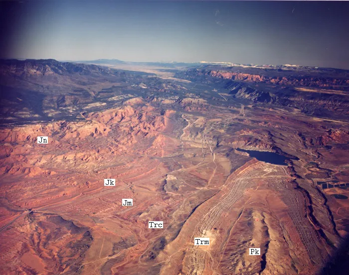
9.4.2 Nếp lõm
Nếp lõm là nếp uốn hình máng, hình chữ U, lõm lên trên. Các lớp cắm xuống và vào phía trục nếp uốn. Đá cổ hơn ở bên ngoài, đá trẻ nhất ở bên trong, dọc theo trục. Dạng lõm (synform) có hình dạng của nếp lõm nhưng, giống dạng lồi, không phân biệt được các đới tuổi. Chương có một mô hình 3D xoay được: Synclinal fold, Macigno Formation (Sketchfab, tác giả alanpitts) ↗.
9.4.3 Nếp oằn
Nếp oằn là nếp uốn dạng bậc thang: các lớp đá phẳng bị uốn lên hoặc xuống, rồi lại tiếp tục phẳng. Chúng phổ biến trên Cao nguyên Colorado, nơi chúng tạo thành các "reef": dãy gờ đá đóng vai trò rào cản địa hình (không phải rạn san hô ngoài biển; Học phần 5). Capitol Reef ở Utah là một nếp oằn. Nếp oằn có thể hình thành khi các tầng trầm tích nông bị uốn cong phía trên các đứt gãy đang phát triển bên dưới. Đó là các , vì chúng kết thúc trước khi lên tới mặt đất; chúng có thể là đứt gãy thuận hoặc nghịch.
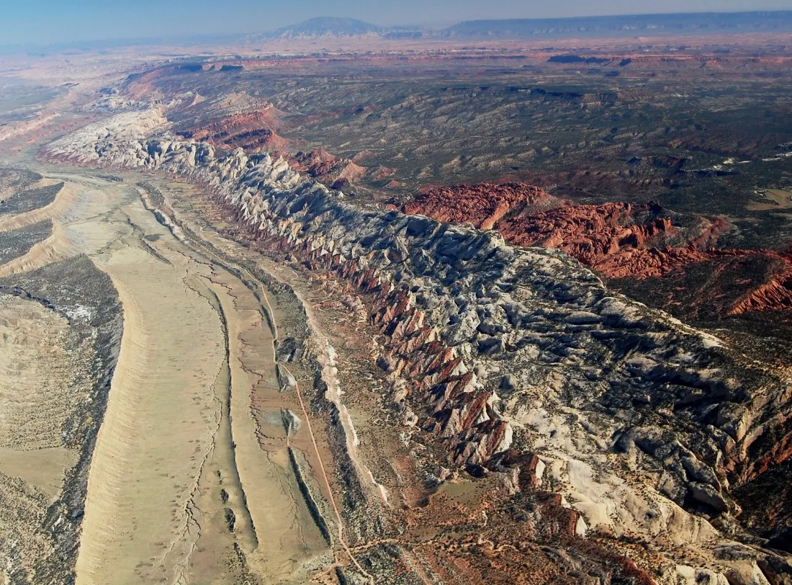
9.4.4 Vòm
Vòm là chỗ các lớp đá bị uốn vồng lên đối xứng hoặc gần đối xứng, có hình như cái bát úp ngược hay mái vòm kiến trúc. Ví dụ ở Utah là San Rafael Swell, Vòm Harrisburg Junction và dãy núi Henry. Vòm hình thành do nén ép, do các thể xâm nhập magma bên dưới (Học phần 4), do điapia muối, hoặc thậm chí do va chạm thiên thạch, như Upheaval Dome trong Vườn quốc gia Canyonlands.
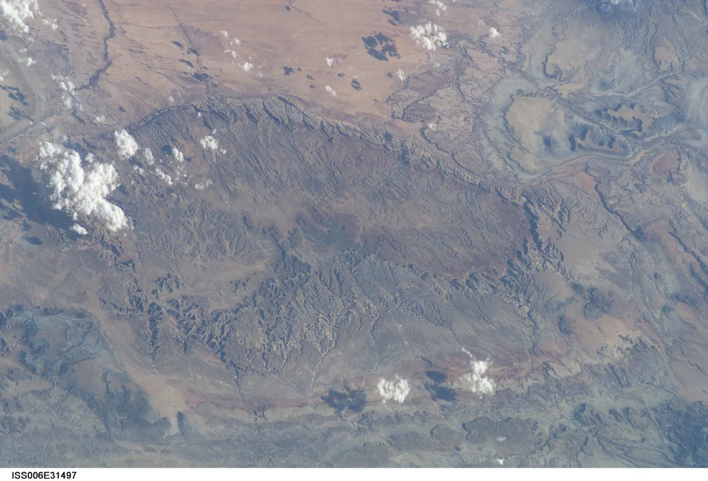
9.4.5 Bồn địa
Bồn địa là dạng ngược lại của vòm: một vùng trũng hình bát trong các lớp đá. Bồn Uinta ở Utah là một ví dụ. Một số bồn địa cấu trúc đồng thời là , nơi tích tụ lượng lớn trầm tích theo thời gian. Chúng có thể hình thành do uốn nếp nhưng thường gặp hơn là hình thành trong quá trình tạo núi, giữa các khối núi hoặc do đứt gãy. Khi bồn bị , nó thu nhận thêm trầm tích, và sức nặng của trầm tích đó lại gây sụt lún thêm: một vòng phản hồi dương. Bồn Oquirrh tuổi Pennsylvania–Permi sụt lún nhanh đã tích tụ hơn 9.144 m (30.000 ft) cát kết, đá phiến sét và đá vôi giàu hóa thạch, nay lộ ra ở núi Timpanogos và hẻm Provo.
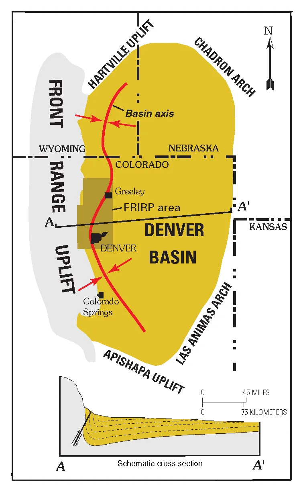
Tự kiểm tra: Bài kiểm tra Mục 9.4 trong giáo trình (tiếng Anh) ↗
9.5Đứt gãy
là những nơi trong vỏ Trái Đất xảy ra biến dạng giòn khi hai khối đá dịch chuyển tương đối với nhau. là sự đứt vỡ của đá; nó xảy ra ở ranh giới mảng và cả bên trong mảng. Đứt gãy trượt dọc theo .
- Đứt gãy thuận và đứt gãy nghịch có chuyển động thẳng đứng, hay : hai khối dịch chuyển lên xuống tương đối với nhau dọc theo một đứt gãy nghiêng.
- là khối nằm trên mặt đứt gãy; là khối nằm dưới. Hãy hình dung một đường hầm mỏ dọc theo đứt gãy: thợ mỏ treo đèn lên cánh treo, còn cánh nằm ở dưới chân thợ mỏ.
- là bậc trên mặt đất nơi đứt gãy xuyên lên.
- là các bề mặt nhẵn bóng, thường có rãnh, trên mặt đứt gãy, tạo ra do ma sát khi dịch chuyển.
- là một mặt biến dạng giòn không có dịch chuyển hay trượt cắt. Khe nứt hình thành do nguội lạnh, giảm áp hoặc uốn nếp, và các hệ khe nứt có thể ảnh hưởng tới nhiều dặm vuông.
9.5.1 Đứt gãy thuận
Ở , cánh treo dịch chuyển xuống so với cánh nằm, theo hướng dốc của đứt gãy. Chúng do lực kéo tạo ra và phổ biến ở ranh giới mảng phân kỳ, nơi vỏ Trái Đất bị kéo giãn (Học phần 2). Ví dụ ở Utah: Đứt gãy Wasatch, Đứt gãy Hurricane, và các đứt gãy giới hạn các thung lũng của Tỉnh Basin and Range.
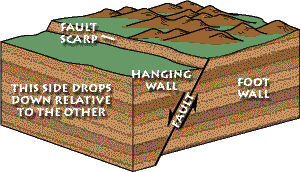
, và là các khối vỏ được giới hạn bởi đứt gãy thuận (Hình 9.13). Địa hào sụt xuống so với các khối bên cạnh và tạo thành thung lũng; địa lũy nhô cao so với các khối bị sụt và tạo thành vùng đất cao. Cùng nhau, chúng tạo nên một kiểu thung lũng và núi đối xứng với đứt gãy thuận ở cả hai bên. Bán địa hào là dạng một phía: một khối bị nghiêng do đứt gãy thuận chỉ ở một bên, tạo nên thung lũng và núi không đối xứng. Tỉnh Basin and Range ở miền tây Utah và Nevada là một chuỗi địa hào và bán địa hào trải từ Thung lũng Salt Lake tới dãy Sierra Nevada.
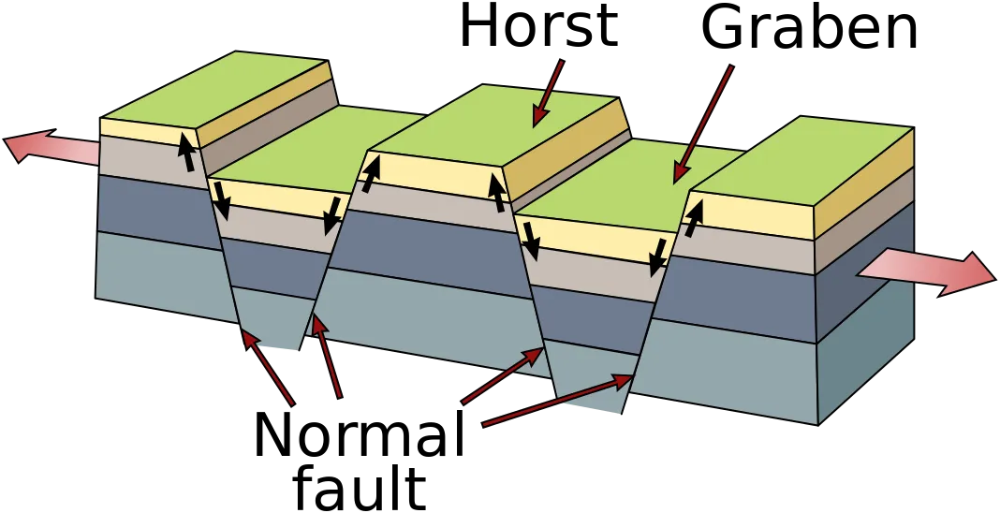
Đứt gãy thuận không kéo dài xuống tới lớp phủ. Ở Basin and Range, góc dốc của đứt gãy thuận có xu hướng giảm theo độ sâu: đứt gãy thoải dần và gần nằm ngang hơn khi đi xuống. Điều này xảy ra ở nơi có lượng giãn lớn trên các đứt gãy thuận góc rất thoải gọi là (Hình 9.14).
9.5.2 Đứt gãy nghịch
Ở , lực nén đẩy cánh treo lên so với cánh nằm (Hình 9.15). là đứt gãy nghịch có mặt đứt gãy nghiêng thoải, dưới 45°. Đứt gãy nghịch chờm đưa đá cổ hơn lên trên đá trẻ hơn và thậm chí có thể làm lặp lại các đơn vị đá trong cột địa tầng.
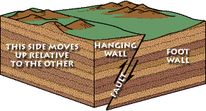
Ở các đới hút chìm trên ranh giới mảng hội tụ, vỏ đại dương đặc hơn bị đẩy xuống dưới vỏ kém đặc hơn dọc theo một loại đứt gãy nghịch đặc biệt, gọi là (megathrust). Các đứt gãy này gây ra những trận động đất lớn nhất từng đo được, thường kèm sự tàn phá nặng nề và sóng thần.
Các tấm chờm có thuật ngữ riêng (Hình 9.16). Tấm nằm trên gọi là (khối ngoại lai, allochthon), còn đá bên dưới mặt chờm là khối tại chỗ (autochthon). (klippe) là phần còn sót lại của cánh treo sau khi vật liệu xung quanh bị xói mòn. là nơi một phần cánh treo bị xói mòn, làm lộ cánh nằm. Ký hiệu bản đồ của đứt gãy nghịch chờm có các hình tam giác (răng cưa) đặt trên tấm nằm trên.
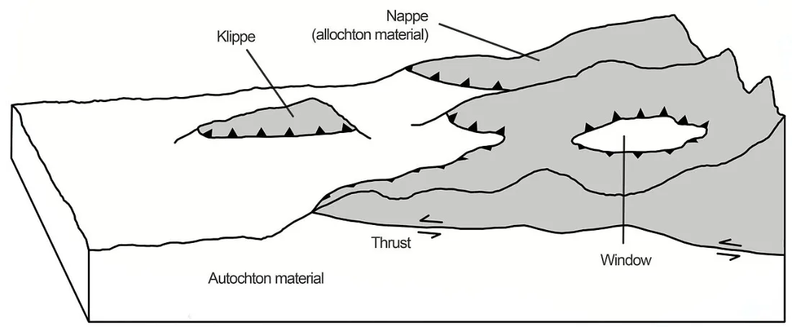
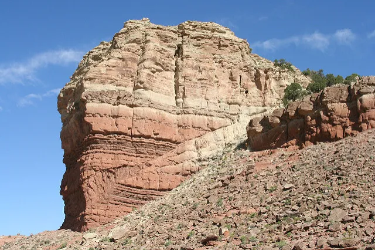
9.5.3 Đứt gãy trượt bằng
có chuyển động ngang sang hai bên. Chúng thường gặp nhất ở ranh giới mảng chuyển dạng và phổ biến trong các đới đứt gãy chuyển dạng dọc sống núi giữa đại dương. Trong chuyển động trượt bằng thuần túy, các khối không dịch chuyển lên xuống tương đối với nhau, chỉ dịch chuyển ngang. Chiều chuyển động được gọi tên theo người quan sát đứng trên một khối: nếu khối bên kia đứt gãy dịch sang trái, chuyển động là (sinistral); nếu dịch sang phải, đó là (dextral) (Hình 9.18). Quy tắc này đúng khi đứng ở bất kỳ bên nào của đứt gãy.
Chỗ uốn khúc của đứt gãy trượt bằng tạo ra vùng nén hoặc vùng kéo giữa các khối trượt (Học phần 2). Lực kéo tạo ra các cấu trúc với đứt gãy thuận và bồn trũng, như Biển Salton ở California. Lực nén tạo ra các cấu trúc với đứt gãy nghịch và tạo núi quy mô nhỏ, như dãy San Gabriel ở California. Các đứt gãy tỏa ra từ những cấu trúc này gọi là (Hình 9.19).
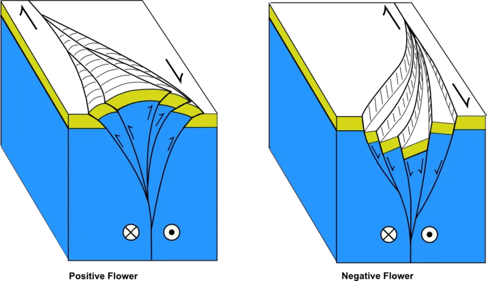
Đứt gãy San Andreas, ranh giới chuyển dạng giữa mảng Bắc Mỹ và mảng Thái Bình Dương, là đứt gãy trượt bằng trượt phải. Đứt gãy Biển Chết ở Jordan và Israel là trượt trái.
| Đứt gãy | Ứng suất | Chuyển động | Ví dụ trong chương |
|---|---|---|---|
| Thuận | Kéo | Trượt theo hướng dốc: cánh treo đi xuống | Wasatch, Hurricane, Basin and Range |
| Nghịch | Nén | Trượt theo hướng dốc: cánh treo đi lên | — |
| Nghịch chờm | Nén | Nghịch, góc dốc dưới 45°; đá cổ nằm trên đá trẻ | Mỏm Ketobe |
| Nghịch chờm siêu lớn | Nén (hút chìm) | Mảng đại dương bị đẩy xuống dưới mảng phía trên | Sunda, Aleut, Cascadia |
| Trượt bằng | Cắt | Ngang: trượt trái hoặc trượt phải | San Andreas (trượt phải), Biển Chết (trượt trái) |
Xem: Classification of Faults (video, tiếng Anh) ↗ · Tự kiểm tra: Bài kiểm tra Mục 9.5 ↗
9.6Kiến thức cơ bản về động đất
Động đất được cảm nhận trên bề mặt Trái Đất khi năng lượng được giải phóng do các khối đá trượt qua nhau, tức là khi sự đứt gãy đã xảy ra. Năng lượng địa chấn giải phóng truyền qua Trái Đất dưới dạng sóng địa chấn. Phần lớn động đất xảy ra dọc theo các ranh giới mảng đang hoạt động. , xảy ra xa ranh giới mảng, cũng có và đến nay vẫn chưa được hiểu rõ. Xem bản đồ động đất thời gian thực của USGS (tiếng Anh) ↗.
9.6.1 Động đất xảy ra thế nào
Sự giải phóng năng lượng địa chấn được giải thích bằng (Hình 9.20). Các khối của những đứt gãy tồn tại lâu dài như Đứt gãy Wasatch, vốn dịch chuyển nhiều lần, bị ma sát khóa chặt với nhau. Trong hàng trăm đến hàng nghìn năm, ứng suất tích tụ dọc đứt gãy cho tới khi thắng được ma sát, làm vỡ đá và khiến đứt gãy bắt đầu dịch chuyển. Khi đó các khối đá đã bị biến dạng nhưng chưa vỡ bật trở lại gần hình dạng ban đầu: đó là . Hãy hình dung bẻ cong một cành cây cho tới khi gãy: năng lượng tích trữ được giải phóng và các mảnh trở lại gần định hướng ban đầu.
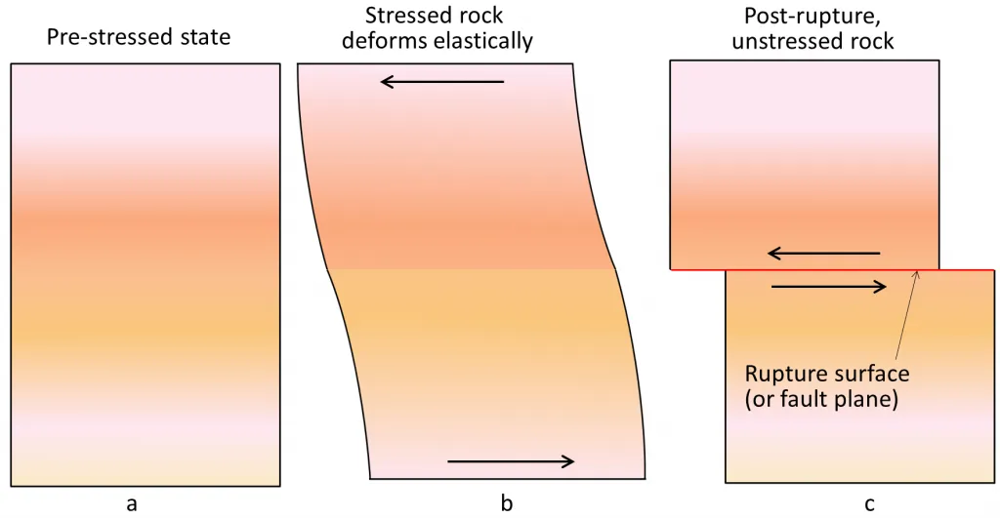
- Sự uốn cong của đá gần đứt gãy cho thấy ứng suất đang tích tụ. Ở những vùng hay có động đất như California, các thiết bị đo biến dạng đo sự uốn cong này để giúp các , những nhà khoa học nghiên cứu động đất, tìm hiểu thêm về cách dự báo động đất.
- Ở nơi đứt gãy không bị khóa, ứng suất gây ra sự dịch chuyển chậm và liên tục gọi là (fault creep), như trên một số đoạn của Đứt gãy San Andreas.
- Sau một trận động đất, ứng suất vẫn tiếp tục tác dụng và năng lượng đàn hồi lại tích tụ trong một thời kỳ yên lặng. Một phần năng lượng có thể được giải phóng dưới dạng các trận động đất nhỏ trên hoặc gần đứt gãy chính gọi là , vài giờ hay vài ngày trước một trận động đất lớn, hoặc hoàn toàn không có. Lần giải phóng năng lượng chính là . có thể xảy ra sau đó khi đá điều chỉnh theo biến dạng mới, và thường giảm dần theo thời gian.
9.6.2 Chấn tiêu và chấn tâm
của động đất, còn gọi là tâm động đất dưới sâu (hypocenter), là điểm trên mặt đứt gãy nơi sự đứt vỡ bắt đầu và từ đó những sóng địa chấn đầu tiên lan ra; nó luôn nằm ở một độ sâu nào đó dưới mặt đất. Từ chấn tiêu, sự dịch chuyển lan lên, xuống và sang ngang dọc mặt đứt gãy và tạo ra sóng địa chấn. Dịch chuyển càng lớn và lan càng xa dọc đứt gãy thì năng lượng giải phóng càng nhiều, rung lắc càng mạnh và càng kéo dài. là điểm trên mặt đất nằm ngay phía trên chấn tiêu. Tin tức thường nêu chấn tâm vì đó là tâm của vùng có người bị ảnh hưởng.
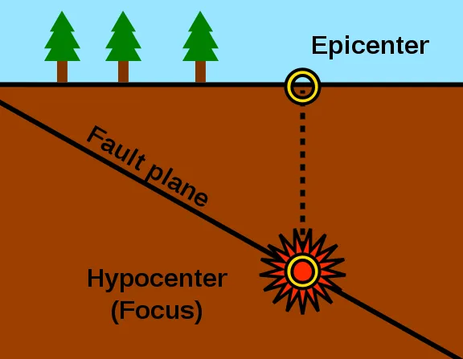
9.6.3 Sóng địa chấn
Sóng mang năng lượng qua một môi trường, như đá hoặc trầm tích bở rời. Các đặc trưng cơ bản của sóng (Hình 9.22):
- : độ cao của dao động; với động đất, đó là độ lớn của chuyển động mặt đất.
- : khoảng cách giữa hai đỉnh sóng liên tiếp.
- : số lần lặp lại của dao động trong một đơn vị thời gian (số chu trình trên một đơn vị thời gian).
- : thời gian để sóng truyền đi một bước sóng; là nghịch đảo của tần số.
Khi các sóng gặp nhau, chúng giao thoa (Hình 9.23). Các sóng cùng pha cho : sóng này cộng thêm và khuếch đại sóng kia. Các sóng lệch pha cho , làm cả hai nhỏ đi. Hai sóng cùng biên độ và tần số, lệch nhau nửa bước sóng, có thể triệt tiêu nhau hoàn toàn. Biên độ, tần số, chu kỳ và giao thoa cùng quyết định độ lớn và cường độ của động đất.
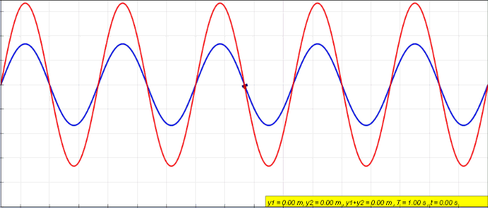
Sóng địa chấn là biểu hiện vật lý của năng lượng giải phóng do bật đàn hồi, được cảm nhận dưới dạng động đất. Có hai nhóm: sóng khối và sóng mặt.
truyền dưới lòng đất qua phần bên trong Trái Đất và là những sóng đầu tiên lan ra từ chấn tiêu:
- (sóng sơ cấp, primary) nhanh nhất. Chúng truyền qua đá bằng cách nén, giống như âm thanh truyền trong không khí: các hạt đá dao động tới lui dọc theo phương truyền, nên sóng P đi qua được chất rắn, chất lỏng, plasma và chất khí.
- (sóng thứ cấp, secondary) chậm hơn và đến sau sóng P. Đây là sóng cắt làm các hạt dao động sang hai bên, nên chúng chỉ truyền qua chất rắn, không qua chất lỏng, plasma hay chất khí.
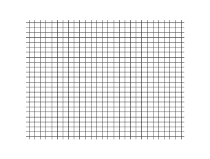
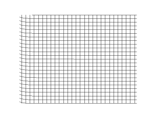
Sóng khối lan qua Trái Đất thành mặt sóng gần hình cầu. Đường đi của một điểm trên mặt sóng đang lan ra là một , tia này tới một địa chấn kế tại một trong hàng nghìn trạm quan trắc. Mật độ tăng theo độ sâu, kéo theo vận tốc địa chấn tăng, nên hiện tượng làm các tia cong ra xa phương thẳng đứng và quay ngược lên về phía mặt đất.
hình thành khi sóng khối từ chấn tiêu tới bề mặt Trái Đất; chúng truyền dọc bề mặt ra xa chấn tâm, chủ yếu từ năng lượng sóng S và một phần từ sóng P (Hình 9.26). Chúng chậm hơn sóng khối, và chuyển động phức tạp theo cả phương ngang lẫn phương đứng của chúng gây ra phần lớn thiệt hại của động đất.
- làm mặt đất rung chủ yếu sang hai bên (theo phương ngang) và là loại tàn phá mạnh nhất, dù tên gọi nghe nhẹ nhàng ("love" nghĩa là tình yêu).
- làm mặt đất cuộn theo quỹ đạo elip kèm nén và giãn theo chiều dọc, giống sóng biển, nhưng các hạt chuyển động ngược chiều với các hạt nước trong sóng biển.
| Sóng | Loại | Chuyển động của hạt | Truyền qua | Tốc độ và tác động |
|---|---|---|---|---|
| P | Sóng khối (sơ cấp) | Tới lui (nén) | Chất rắn, lỏng, plasma, khí | Nhanh nhất; tới đầu tiên |
| S | Sóng khối (thứ cấp) | Sang hai bên (cắt) | Chỉ chất rắn | Chậm hơn; tới thứ hai |
| Love | Sóng mặt | Ngang, sang hai bên | Dọc bề mặt | Chậm hơn sóng khối; tàn phá mạnh nhất |
| Rayleigh | Sóng mặt | Cuộn theo elip | Dọc bề mặt | Chậm hơn sóng khối; gây thiệt hại |
Người ta nói rằng sau một trận động đất, Trái Đất ngân vang như một quả chuông. Sóng địa chấn khúc xạ (bị bẻ cong) và phản xạ (bật lại) tại ranh giới giữa các loại đá có mật độ khác nhau. Sóng S không đi qua được nhân ngoài lỏng, nên để lại một ở phía hành tinh đối diện với chấn tiêu. Sóng P đi qua được nhân nhưng bị khúc xạ tại ranh giới nhân–lớp phủ, để lại vùng tối sóng P hình nón ở một phần phía bên kia (Hình 9.27).
Xem: Động đất Tōhoku 2011: sóng khối và sóng mặt (seismicsoundlab) ↗
9.6.4 Động đất kích thích
là động đất do hoạt động của con người gây ra, ví dụ gần các khu khai thác khí thiên nhiên. Chất lỏng thải được bơm xuống lòng đất, thường là sản phẩm phụ của (fracking), một quy trình khai thác khí thiên nhiên. Chất lỏng làm tăng áp lực lỗ rỗng (áp lực hướng ra ngoài của chất lỏng trong lỗ rỗng của đá), làm giảm ma sát vốn giữ cho các khối đá không trượt qua nhau, tức là như bôi trơn các mặt đứt gãy. Sự gia tăng mạnh hoạt động khoan ở miền trung Hoa Kỳ đã tạo ra lượng lớn dung dịch khoan thải cần xử lý, cùng với sự gia tăng đo được về số trận động đất trong vùng (Hình 9.28).
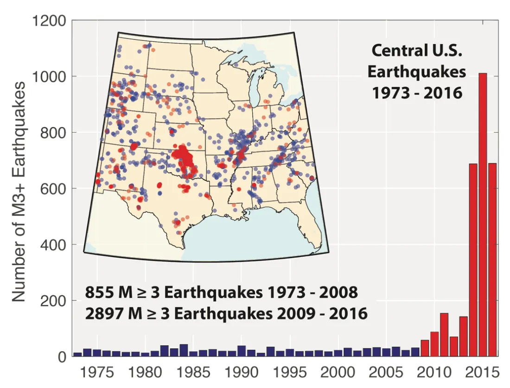
Tự kiểm tra: Bài kiểm tra Mục 9.6 trong giáo trình (tiếng Anh) ↗
9.7Đo động đất
9.7.1 Địa chấn kế
Con người cảm nhận khoảng 1 triệu trận động đất mỗi năm, thường khi ở gần nguồn và trận động đất đạt độ lớn mô men ít nhất 2,5. Các trận động đất lớn có độ lớn từ 7,0 trở lên là cực kỳ hiếm.
đo được cả những rung động nhỏ nhất của mặt đất (Hình 9.29). Các thiết bị đầu thế kỷ 20 dùng một ngòi bút có quả nặng (con lắc) treo trên một lò xo dài, phía trên thiết bị ghi gắn chặt vào mặt đất: một trống quay quấn băng giấy liên tục. Khi có động đất, ngòi bút treo đứng yên và ghi lại chuyển động của mặt đất lên giấy. Biểu đồ thu được là . Các phiên bản kỹ thuật số dùng nam châm, cuộn dây, cảm biến điện và tín hiệu số thay cho bút, lò xo, trống và giấy. là một bộ địa chấn kế đo rung động theo ba hướng: bắc–nam (x), đông–tây (y) và lên–xuống (z).
Để xác định chấn tâm, các nhà địa chấn học dùng thời điểm đến khác nhau của các sóng (Hình 9.30). Trên địa chấn đồ, sóng P xuất hiện trước, rồi đến sóng S, và cuối cùng là sóng mặt, có biên độ lớn nhất. Sóng mặt mất năng lượng nhanh nên không đo được ở xa chấn tâm. Hiệu thời gian cho biết khoảng cách tới chấn tâm nhưng không cho biết hướng.
Với thời điểm đến ghi được từ nhiều trạm, các nhà địa chấn học dùng để xác định chính xác chấn tâm (Hình 9.31). Cần ít nhất ba trạm. Khoảng cách từ mỗi trạm được vẽ thành bán kính của một đường tròn, và chấn tâm là nơi các đường tròn gặp nhau. Phương pháp này cũng áp dụng trong không gian ba chiều với địa chấn kế nhiều trục và các mặt cầu thay cho đường tròn, cho biết độ sâu của chấn tiêu.
9.7.2 Mạng lưới địa chấn
Sổ đăng ký Quốc tế các Trạm Địa chấn (International Registry of Seismograph Stations) ↗ liệt kê hơn 20.000 địa chấn kế. Bằng cách so sánh số liệu từ nhiều địa chấn kế, các nhà khoa học lập bản đồ bên trong Trái Đất, phát hiện các vụ nổ lớn và dự báo sóng thần. Mạng Địa chấn Toàn cầu (Global Seismographic Network) ↗, một tập hợp địa chấn kế liên kết trên khắp thế giới chia sẻ số liệu thời gian thực, có hơn 150 trạm đạt các tiêu chuẩn thiết kế và độ chính xác quy định. USArray là mạng lưới hàng trăm địa chấn kế cố định và di động dùng để lập bản đồ lòng đất Hoa Kỳ. Ngoài động đất và các tai biến liên quan, mạng lưới toàn cầu còn giúp phát hiện các vụ thử vũ khí hạt nhân, do Tổ chức Hiệp ước Cấm thử Hạt nhân Toàn diện giám sát; gần đây các địa chấn kế đã ghi lại những vụ thử hạt nhân của Triều Tiên.
Xem: Mô phỏng chuyển động mặt đất trận động đất Nepal M7,9 ↗
9.7.3 Chụp cắt lớp địa chấn
Giống như chụp CT (chụp cắt lớp vi tính) dùng tia X ở nhiều góc để tạo ảnh bên trong cơ thể, dùng tia địa chấn của hàng nghìn trận động đất mỗi năm, đi qua đá theo mọi góc, để tạo ảnh các cấu trúc bên trong Trái Đất.
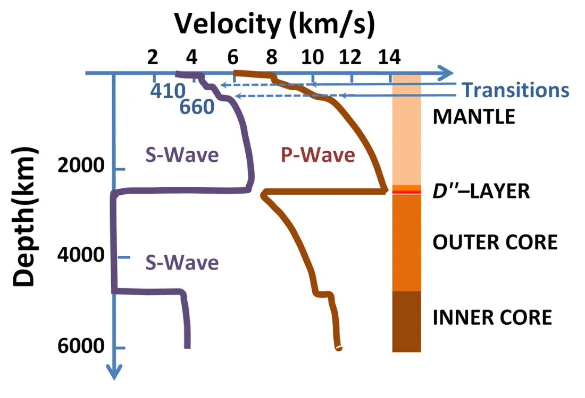
Với giả thiết Trái Đất gồm các lớp đồng nhất, các nhà địa chất đã xây dựng một mô hình về tính chất dự kiến của vật liệu Trái Đất ở mọi độ sâu: (Mô hình Trái Đất Tham chiếu Sơ bộ, Preliminary Reference Earth Model). Các tính chất này gồm vận tốc sóng địa chấn, vốn phụ thuộc vào mật độ và tính đàn hồi của đá. Trong lớp phủ, nhiệt độ làm thay đổi mật độ: đá lạnh hơn thì đặc hơn và truyền sóng địa chấn nhanh hơn; đá nóng hơn thì kém đặc hơn và truyền sóng chậm hơn. Chênh lệch giữa thời điểm đến đo được tại các trạm địa chấn và thời điểm PREM dự báo là các . Vì tia từ nhiều trận động đất cắt qua các khối đá theo mọi góc và tới nhiều trạm, các chênh lệch này có thể được dựng thành ảnh ba chiều của lòng Trái Đất.
Các nhà địa chấn học đã tạo ảnh mảng Farallon, mảng đã hút chìm xuống dưới Bắc Mỹ, và buồng magma Yellowstone, sản phẩm của điểm nóng Yellowstone. Những đặc điểm khác thường của quá trình hút chìm mảng Farallon được cho là giải thích nhiều đặc điểm của miền tây Bắc Mỹ, kể cả dãy Rocky (Học phần 8).
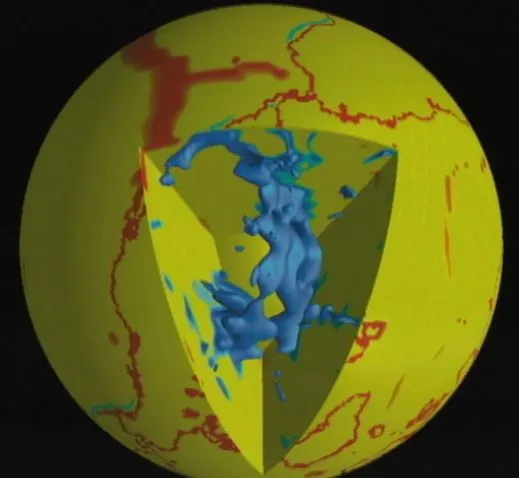
9.7.4 Độ lớn và cường độ động đất
(magnitude) đo năng lượng do động đất giải phóng. (intensity) đánh giá mặt đất rung mạnh đến đâu và gây thiệt hại gì tại một nơi cụ thể.
Thang độ Richter. (ML), thang độ lớn đầu tiên và nổi tiếng nhất, do Charles F. Richter (1900–1985) xây dựng tại Viện Công nghệ California. Độ Richter được tính từ biên độ cực đại của nét bút trên địa chấn đồ, hiệu chỉnh theo khoảng cách bằng hiệu thời điểm đến S–P. Thang này là , dựa trên lũy thừa của 10: mỗi bậc một đơn vị tương ứng biên độ sóng địa chấn tăng 10 lần (trận độ lớn 6 làm mặt đất rung mạnh gấp 10 lần trận độ lớn 5), nhưng năng lượng tăng khoảng 32 lần. Thang được xây dựng cho động đất ở Nam California với các địa chấn kế tại chỗ, nên kém chính xác với khoảng cách xa và động đất rất lớn, và phần lớn các cơ quan không còn dùng nó. Báo chí thường vẫn đưa độ Richter ngay sau một trận động đất.
Thang độ lớn mô men. (MW) cho biết kích thước tuyệt đối của một trận động đất bằng cách kết hợp thông tin từ nhiều nơi. Nó được tính từ năng lượng thực sự giải phóng, dựa trên diện tích đứt vỡ, lượng trượt và độ cứng của đá. Vì mỗi trận động đất xảy ra trong bối cảnh địa chất riêng và diện tích đứt vỡ thường khó đo, việc tính toán có thể mất vài ngày hoặc thậm chí vài tháng. Thang này cũng là thang lôgarit, và giá trị gần bằng độ Richter, trừ các trận động đất rất lớn. Nó chính xác hơn và hữu ích hơn cho khoa học.
Thang cường độ Mercalli cải tiến. (MMI) là thang đánh giá định tính mức rung lắc dựa trên thiệt hại quan sát được và cảm nhận của con người, từ I (thấp nhất) đến X (cao nhất) trong bảng của chương (Bảng 9.7). Cường độ thay đổi theo khoảng cách tới chấn tâm và theo mật độ dân cư, ví dụ đô thị so với nông thôn. Các nhà khoa học dùng thang này để phân loại động đất trước khi có độ lớn định lượng. Bản đồ cường độ cho thấy nơi thiệt hại nặng nhất, dựa trên phiếu khảo sát, tin tức địa phương và báo cáo tại hiện trường.
| Thang | Đo | Dựa trên | Tốc độ và ứng dụng |
|---|---|---|---|
| Richter (ML) | Độ lớn (năng lượng) | Biên độ cực đại trên địa chấn đồ, hiệu chỉnh theo khoảng cách | Nhanh; con số đầu tiên trên báo chí; hạn chế với động đất ở xa và rất lớn |
| Độ lớn mô men (MW) | Độ lớn (năng lượng) | Diện tích đứt vỡ × lượng trượt × độ cứng của đá | Vài ngày đến vài tháng; chính xác hơn; được giới khoa học sử dụng |
| Mercalli cải tiến (MMI) | Cường độ (rung lắc, thiệt hại) | Thiệt hại quan sát được và cảm nhận của con người | Khác nhau giữa các nơi trong cùng một trận động đất |
| Cường độ | Rung lắc | Mô tả và thiệt hại |
|---|---|---|
| I | Không cảm nhận | Không cảm nhận được, trừ rất ít người trong điều kiện đặc biệt thuận lợi. |
| II | Yếu | Chỉ vài người đang nghỉ ngơi cảm nhận được, nhất là ở các tầng trên của tòa nhà. |
| III | Yếu | Cảm nhận khá rõ trong nhà, nhất là ở các tầng trên; nhiều người không nhận ra đó là động đất. Ô tô đang đỗ có thể rung nhẹ; rung như có xe tải chạy qua. |
| IV | Nhẹ | Ban ngày nhiều người trong nhà và ít người ngoài trời cảm nhận được; ban đêm một số người bị đánh thức. Bát đĩa, cửa sổ, cửa ra vào rung động; tường nứt; như xe tải nặng đâm vào tòa nhà. Ô tô đang đỗ rung rõ. |
| V | Vừa | Gần như mọi người đều cảm nhận được; nhiều người bị đánh thức. Một số bát đĩa và cửa sổ vỡ; đồ vật kém vững bị đổ; đồng hồ quả lắc có thể ngừng chạy. |
| VI | Mạnh | Mọi người đều cảm nhận được; nhiều người hoảng sợ. Một số đồ đạc nặng bị xê dịch; vài chỗ vữa trát rơi. Thiệt hại nhẹ. |
| VII | Rất mạnh | Thiệt hại không đáng kể ở công trình thiết kế tốt, nhẹ đến vừa ở công trình thông thường xây tốt, đáng kể ở công trình xây kém; một số ống khói bị gãy. |
| VIII | Nghiêm trọng | Thiệt hại nhẹ ở công trình thiết kế đặc biệt; đáng kể ở nhà kiên cố thông thường, có sập một phần; lớn ở công trình xây kém. Ống khói, ống khói nhà máy, cột, tượng đài và tường đổ; đồ đạc nặng bị lật. |
| IX | Dữ dội | Thiệt hại đáng kể ở công trình thiết kế đặc biệt; khung nhà thiết kế tốt bị lệch khỏi phương thẳng đứng; lớn ở nhà kiên cố, có sập một phần. Nhà bị xô lệch khỏi móng. |
| X | Cực mạnh | Một số công trình gỗ xây tốt bị phá hủy; phần lớn công trình khối xây và nhà khung bị phá hủy cùng móng. Đường ray bị uốn cong. |
Bản đồ rung lắc. (USGS gọi là ShakeMap) dùng số liệu chất lượng cao, được nội suy bằng máy tính từ các mạng địa chấn kế, để cho thấy nơi rung lắc mạnh. Trong những phút quan trọng sau một trận động đất, chúng cho đội cứu hộ biết nơi có thể bị thiệt hại nặng nhất và giúp tìm các đường ống khí đốt cùng hạ tầng tiện ích khác có thể bị hư hại (Hình 9.34).
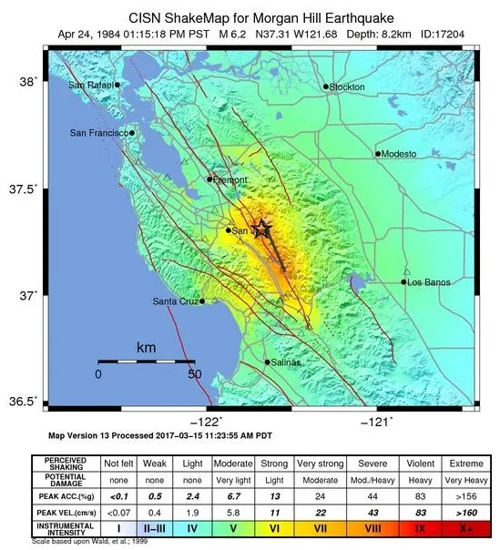
Xem: Moment Magnitude Explained: What Happened to the Richter Scale? (tiếng Anh) ↗ · Tự kiểm tra: Bài kiểm tra Mục 9.7 ↗
9.8Rủi ro động đất
9.8.1 Các yếu tố quyết định mức rung lắc
Độ lớn là giá trị tuyệt đối của năng lượng giải phóng. Cường độ, tức mặt đất rung lắc mạnh đến đâu, phụ thuộc vào nhiều yếu tố:
- Độ lớn: nói chung, độ lớn càng cao thì rung lắc càng mạnh và càng kéo dài (Bảng 9.8).
- Vị trí và hướng: rung lắc mạnh hơn khi ở gần chấn tâm, và phụ thuộc vào vị trí người quan sát so với chấn tâm, hướng lan truyền của sự đứt vỡ và đường đứt vỡ lớn nhất.
- Điều kiện địa chất tại chỗ: các loại nền đất khác nhau phản ứng khác nhau, như một khối thạch rau câu so với một khối thịt xay bị cùng một sóng tác động. Đá gốc rắn chắc rung ít hơn trầm tích bở rời. Sóng địa chấn truyền nhanh nhất qua đá gốc gắn kết, chậm hơn qua trầm tích bở rời và chậm nhất qua trầm tích bở rời chứa nhiều nước. Khi sóng chậm lại, năng lượng chuyển sang biên độ, nên chuyển động và rung lắc trên mặt đất tăng lên ().
- Độ sâu chấn tiêu: động đất càng sâu thì mặt đất rung càng ít, vì phần lớn năng lượng, do sóng khối mang đi, bị mất trước khi tới bề mặt, nơi sóng mặt được tạo ra.
| Độ lớn | MMI | Rung lắc và thiệt hại |
|---|---|---|
| 1,0–3,0 | I | Chỉ rất ít người cảm nhận được. |
| 3,0–3,9 | II–III | Cảm nhận rõ trong nhà, nhất là ở các tầng trên. |
| 4,0–4,9 | IV–V | Phần lớn hoặc tất cả mọi người cảm nhận được. Bát đĩa, cửa, ô tô rung và có thể vỡ. |
| 5,0–5,9 | VI–VII | Mọi người đều cảm nhận được. Một số đồ vật bị đổ hoặc vỡ; có thể gây hư hại nhà cửa. |
| 6,0–6,9 | VII–IX | Rung lắc đáng sợ. Thiệt hại đáng kể, nhất là ở nhà xây kém. |
| ≥ 7,0 | ≥ VIII | Nhà cửa bị phá hủy đáng kể; đồ vật có thể bị hất tung lên không. |
Xem: Hình động khuếch đại và hóa lỏng đất (tiếng Anh) ↗
9.8.2 Các yếu tố quyết định mức phá hủy
- Vật liệu xây dựng: độ mềm dẻo của vật liệu quyết định khả năng chịu rung lắc. (URM) chịu thiệt hại nặng nhất (Hình 9.35). Khung gỗ liên kết bằng đinh có thể uốn và co giãn nên dễ trụ vững hơn; thép cũng có thể biến dạng đàn hồi trước khi bị phá hủy. Chiến dịch Fix the Bricks ↗ của thành phố Salt Lake City giải thích về an toàn cho nhà khối xây không gia cố.
- Cường độ và thời gian kéo dài: rung lắc càng mạnh và càng lâu thì phá hủy càng nhiều.
- : khi tần số của sóng địa chấn trùng với tần số dao động riêng của tòa nhà, rung lắc tăng lên. Trong trận động đất Thành phố Mexico năm 1985, các tòa nhà cao 6 đến 15 tầng đặc biệt dễ bị tổn hại. Các tòa nhà chọc trời chống động đất có bộ giảm chấn và hệ để giảm cộng hưởng. Cộng hưởng phụ thuộc vào vật liệu của tòa nhà, nên sự thay đổi tần số cộng hưởng đo được của một tòa nhà có thể báo hiệu sự thay đổi về độ toàn vẹn kết cấu.
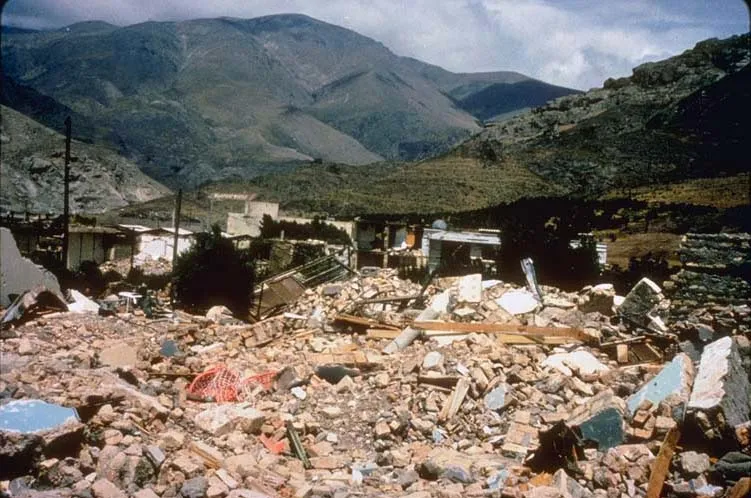
Xem: Why do buildings fall in earthquakes? (tiếng Anh) ↗ · Bộ cách chấn đáy của Tòa nhà Quốc hội bang Utah ↗
9.8.3 Sự lặp lại của động đất
Một thời gian dài không hoạt động trên một đoạn đứt gãy từng có nhiều trận động đất lặp lại gọi là . Sự yên lặng có thể cho thấy đoạn đứt gãy đang bị khóa và tích tụ biến dạng, làm tăng khả năng xảy ra một trận động đất khác. Các nhà địa chất đào cắt ngang đứt gãy để ước tính tần suất các trận động đất trong quá khứ (Hình 9.36). Hào khảo sát hiệu quả nhất với các đứt gãy có dài, khoảng hàng trăm đến hàng chục nghìn năm giữa các trận động đất đáng kể; những nơi hay có động đất thường đã có nhiều số liệu ghi chép hơn.
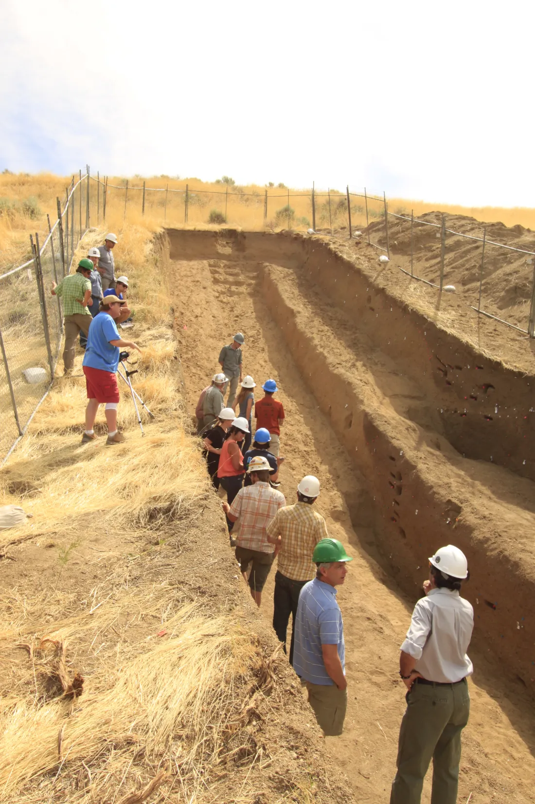
9.8.4 Phân bố động đất
Giống núi lửa, động đất tập trung quanh các ranh giới mảng đang hoạt động; động đất nội mảng tương đối hiếm (Bảng 9.9).
| Bối cảnh | Động đất | Ví dụ trong chương |
|---|---|---|
| Đới hút chìm (hội tụ) | Lớn nhất và sâu nhất: (động đất nghịch chờm siêu lớn) | Sumatra, quần đảo Aleut, bờ tây Nam Mỹ, Cascadia (Washington và Oregon) |
| Đới va chạm (lục địa hội tụ) | Đới rộng; có thể sâu và lớn, do tàn dư của quá trình hút chìm trước đây hoặc các quá trình ở vỏ sâu | Himalaya, Alps |
| Ranh giới chuyển dạng | Vừa đến lớn, thường tới khoảng độ lớn mô men 8, trên đứt gãy trượt bằng | San Andreas; Enriquillo–Plantain Garden (Haiti 2010); Septentrional (Cap-Haïtien 1842, Cuba 2020); Alpine (New Zealand); Anatolia (Thổ Nhĩ Kỳ) |
| Ranh giới phân kỳ | Thường ở mức vừa, tại các rift lục địa và sống núi giữa đại dương | Hệ thống Rift Đông Phi, Iceland, Basin and Range |
| Nội mảng | Hiếm; ở vỏ bị suy yếu hoặc nơi ứng suất kiến tạo tập trung | Đới địa chấn New Madrid (rift Reelfoot thất bại) |
Đới địa chấn New Madrid, bao trùm một phần các bang Missouri, Illinois, Tennessee, Arkansas và Indiana, được cho là đánh dấu rift Reelfoot thất bại (Hình 9.37). Rift thất bại đã làm vỏ Trái Đất suy yếu, khiến nó phản ứng mạnh hơn với chuyển động của mảng. Các nhà địa chất cho rằng động đất ở đây ít xảy ra là do tốc độ biến dạng thấp.
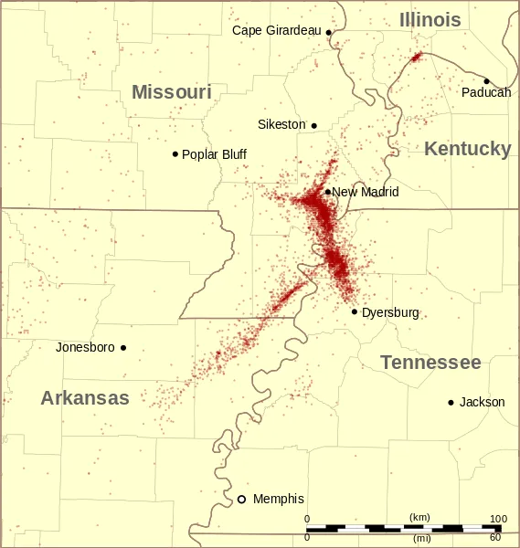
Xem: Các trận động đất đáng kể, 2010–2012 ↗
9.8.5 Tai biến thứ sinh do động đất
Phần lớn thiệt hại là do rung lắc và dịch chuyển của đứt gãy, nhưng các tai biến thứ sinh cũng đe dọa con người và công trình, đôi khi cả sau khi rung lắc đã dừng.
: trầm tích bở rời bão hòa nước, thường là bột hoặc cát, trở nên giống chất lỏng khi bị rung lắc. Rung lắc phá vỡ liên kết giữa các hạt, tạo thành một hỗn hợp sệt gồm các hạt lơ lửng trong nước. Nhà cửa lún hoặc nghiêng vào lớp trầm tích bị hóa lỏng, trông như cát lún trong phim (Hình 9.38). Hóa lỏng đất còn tạo ra , các nón hình thành khi cát hóa lỏng phun lên qua một lớp phủ bên trên, thường hạt mịn hơn.
Xem: Minh họa hóa lỏng đất ↗ · Hóa lỏng đất ở Makuhari, 2011 ↗
là sóng biển do động đất gây ra, thuộc loại thảm họa thiên nhiên tàn khốc nhất. Khi chuyển động của đứt gãy hoặc một vụ sạt lở dưới nước làm đáy biển bị dịch chuyển, sự dịch chuyển nâng một khối nước biển lên và khởi phát con sóng. Ở vùng nước sâu, sóng thần di chuyển nhanh với biên độ nhỏ; ở vùng nước nông gần bờ, chúng chậm lại và cao lên rất nhiều (Hình 9.39). Ngay trước khi sóng ập vào, phần bụng sóng đi trước đỉnh sóng kéo nước rút ra xa bờ. Những người tò mò đi theo dòng nước rút có thể bị bức tường nước cao tới 30 m (100 ft) ập tới cuốn đi. Hệ thống cảnh báo sớm cứu được nhiều sinh mạng. Sóng biển, kể cả sóng thần, được trình bày ở Chương 12.
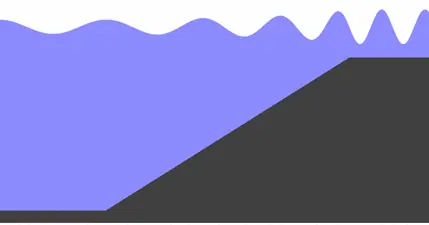
Sạt lở đất: rung lắc có thể kích hoạt sạt lở đất (Chương 10). Trận động đất St. George, Utah, năm 1992 đã gây ra một vụ sạt lở phá hủy nhiều công trình trong khu dân cư Balanced Rock Hills (Hình 9.40).
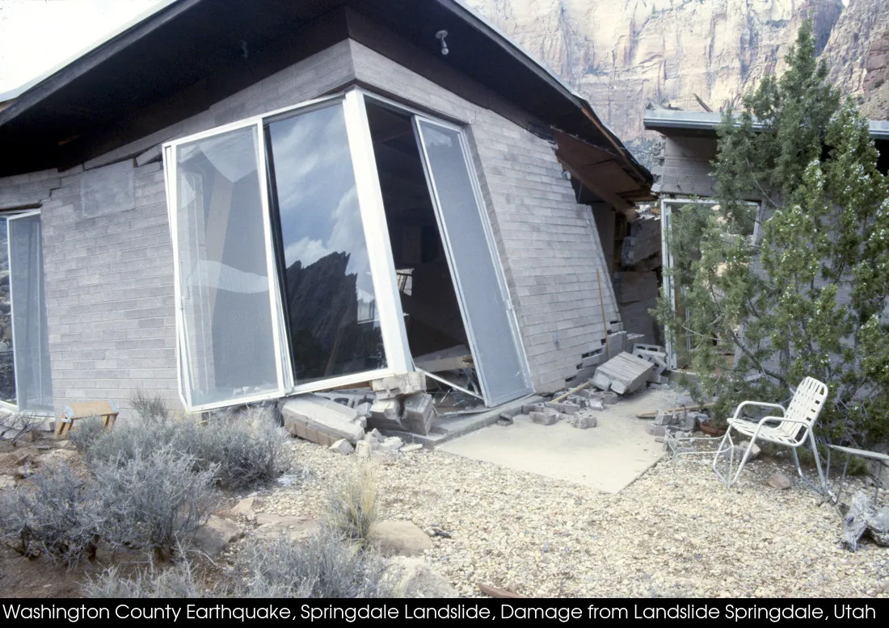
(seiche) là sóng do động đất tạo ra trong hồ: rung lắc làm nước sóng sánh qua lại hoặc làm thay đổi độ sâu của hồ. Dao động lắc ở hồ Hebgen trong một trận động đất năm 1959 đã gây thiệt hại lớn cho các công trình và đường sá lân cận. Video: dao động lắc trong một bể bơi, Nepal 2015 ↗
Thay đổi độ cao địa hình: bật đàn hồi và dịch chuyển của đứt gãy có thể làm hạ thấp (sụt lún) hoặc nâng cao (nâng trồi) mặt đất. Trong trận động đất Alaska năm 1964, chênh lệch độ cao giữa cánh treo và cánh nằm từ một đến vài mét (3–30 ft). Dãy núi Wasatch là sự tích tụ của các vách đứt gãy, mỗi lần cao thêm vài mét, trong vài triệu năm.
Tự kiểm tra: Bài kiểm tra Mục 9.8 trong giáo trình (tiếng Anh) ↗
9.9Các trận động đất điển hình
Chương mô tả các trận động đất đáng chú ý ở Bắc Mỹ và trên thế giới (Bảng 9.10). Động đất ở vùng Basin and Range của Utah, từ Đứt gãy Wasatch tới dãy Sierra Nevada, chủ yếu xảy ra trên các đứt gãy thuận do lực kéo tạo ra. Đứt gãy Wasatch đánh dấu rìa phía đông của Basin and Range và đã được nghiên cứu như một nguồn tai biến trong hơn 100 năm. Video bay dọc Đứt gãy Wasatch ↗
| Trận động đất | Độ lớn | Bối cảnh | Diễn biến |
|---|---|---|---|
| New Madrid, Missouri, 12/1811–2/1812 | >7 (một chuỗi) | Nội mảng | Làm hư hại nhà cửa ở St. Louis, thay đổi dòng chảy sông Mississippi, san phẳng thị trấn New Madrid. Ghi chép có từ năm 1699 và vẫn tiếp diễn đến nay. |
| Charleston, Nam Carolina, 1886 | 7,0; MMI X | Nội mảng (đứt gãy cổ từ thời siêu lục địa Pangea tách vỡ) | Chuyển động mặt đất mạnh và hóa lỏng đất trên diện rộng; ít nhất 60 người chết. Các trận động đất tàn phá lặp lại khoảng 1.500–1.800 năm một lần. |
| San Francisco, 18/4/1906 | 7,8; MMI X | Đứt gãy San Andreas | Dư chấn và hỏa hoạn phá hủy khoảng 80% thành phố. G.K. Gilbert và Richard L. Humphrey tới vào ngày hôm sau để đo đạc và chụp ảnh. |
| Alaska, 1964 | 9,2 | Đứt gãy nghịch chờm siêu lớn Aleut | Một trong những trận mạnh nhất từng ghi nhận; nhiều vùng rộng lớn bị sụt lún và nâng lên; nhiều hiện tượng dịch chuyển khối. |
| Loma Prieta, California, 1989 | 6,9 | Đứt gãy San Andreas | 63 người chết; một dư chấn độ lớn 5,2; đường cao tốc bị oằn và một phần cầu Vịnh San Francisco–Oakland bị sập. |
| Thiểm Tây, Trung Quốc, 23/1/1556 | ~8 | — | Khoảng 830.000 người chết, trận động đất chết chóc nhất lịch sử, do các nhà hang (diêu động) đào trong hoàng thổ (Học phần 5) bị sập. Chu kỳ lặp lại khoảng 1.000 năm. |
| Lisbon, Bồ Đào Nha, 1/11/1755 | 8–9 | — | 10.000–17.400 người chết do động đất; tính cả sóng thần sau đó, tổng cộng 30.000–70.000 người. |
| Valdivia, Chile, 22/5/1960 | 9,4–9,6 | Đứt gãy nghịch chờm siêu lớn ở đới hút chìm | Trận động đất mạnh nhất từng đo được, kéo dài khoảng 10 phút. Sóng thần phá hủy nhà cửa ở Nhật Bản và Hawaii; các miệng phun hoạt động trên Puyehue–Cordón Caulle. |
| Đường Sơn, Trung Quốc, 28/7/1976 | 7,8 | — | Xảy ra ngay trước 4 giờ sáng; hơn 240.000 người chết vì mọi người đang ngủ và phần lớn nhà là khối xây không gia cố. |
| Sumatra, Indonesia, 26/12/2004 | 9,0–9,3 | Đứt gãy nghịch chờm siêu lớn Sunda (mảng Úc hút chìm dưới mảng Sunda) | Sóng thần cao tới 24 m (79 ft) làm hơn 200.000 người chết quanh Ấn Độ Dương. |
| Haiti, 12/1/2010 | 7,0 | Chuyển dạng (Enriquillo–Plantain Garden) | Nhiều dư chấn độ lớn từ 4,5 trở lên; hơn 200.000 người chết; tiếp theo là dịch tả làm thêm hàng nghìn người chết. |
| Tōhoku, Nhật Bản, 11/3/2011 | 9,0 | Đứt gãy nghịch chờm siêu lớn ở đới hút chìm | Nhà chống động đất hạn chế được thiệt hại do rung lắc, nhưng sóng thần làm hơn 15.000 người chết và gây ra sự cố tan chảy lò phản ứng hạt nhân Fukushima. |
Nhiều trận động đất lớn nhất lịch sử đã xảy ra ở các đới nghịch chờm siêu lớn, như Đới hút chìm Cascadia ngoài khơi Washington và Oregon.
Xem: 1964: The Great Alaska Earthquake (USGS) ↗ · Loma Prieta, 1989 ↗ · Hình động sóng thần: Valdivia 1960 ↗ · Tự kiểm tra: Bài kiểm tra Mục 9.9 ↗
Tóm tắt
Ứng suất (lực tác dụng) có ba loại: kéo, nén và cắt. Ứng suất gây ra biến dạng, có thể là đàn hồi, dẻo hoặc giòn. Bản đồ địa chất thể hiện các thành hệ trên mặt đất, tức biểu hiện bề mặt của các cấu trúc ba chiều bên dưới; ký hiệu đường phương và hướng dốc cho biết định hướng của các lớp đá. Nếp uốn được phân loại theo cánh, trục và mặt trục. Đứt gãy hình thành khi ứng suất vượt quá độ bền và ma sát của đá; ba kiểu chính là đứt gãy thuận, nghịch và trượt bằng. Động đất là sự phá hủy giòn đột ngột kèm bật đàn hồi, phát ra sóng khối (P và S) và sóng mặt (Love và Rayleigh). Địa chấn kế ghi lại chúng; phép đạc tam giác xác định chấn tâm; độ lớn mô men đã thay thế thang Richter để đo kích thước, còn cường độ Mercalli đánh giá mức rung lắc. Thiệt hại phụ thuộc vào độ lớn, vị trí, nền đất, vật liệu xây dựng, thời gian rung và cộng hưởng; các tai biến thứ sinh gồm hóa lỏng đất, sóng thần, sạt lở đất, dao động lắc và thay đổi độ cao địa hình.
Ôn nhanh
- Kéo → giãn dài, đứt gãy thuận; nén → rút ngắn, nếp uốn, đứt gãy nghịch và nghịch chờm; cắt → xé rách, đứt gãy trượt bằng.
- Đàn hồi (hồi phục được) → điểm chảy dẻo → dẻo (vĩnh viễn) → phá hủy giòn. Nhiệt làm đá dẻo hơn; biến dạng nhanh và đá bền làm đá giòn hơn.
- Đường phương = hướng của một đường nằm ngang trên lớp đá; hướng dốc và góc dốc = góc và hướng cắm xuống so với mặt nằm ngang.
- Nếp lồi/vòm: cổ nhất ở giữa. Nếp lõm/bồn địa: trẻ nhất ở giữa.
- Thuận: cánh treo đi xuống. Nghịch: cánh treo đi lên (nghịch chờm khi dưới 45°). Trượt bằng: trượt trái hoặc trượt phải.
- Chấn tiêu ở dưới sâu; chấn tâm ngay phía trên. Sóng P tới trước, rồi sóng S, rồi sóng mặt (lớn nhất).
- Sóng S không đi qua được nhân ngoài lỏng → vùng tối.
- Độ lớn = năng lượng (mỗi đơn vị: biên độ ×10, năng lượng ×32); cường độ = rung lắc và thiệt hại (Mercalli).
Tự kiểm tra: Bài ôn tập Chương 9 trong giáo trình (tiếng Anh) ↗
Tài liệu tham khảo
Ghi chú kiểm chứng
Mọi nội dung trong tài liệu này đã được đối chiếu với chương trong giáo trình. Ở những chỗ chương khác với tài liệu tham khảo hiện hành hoặc tự mâu thuẫn, tài liệu ghi chú tại đây để bạn biết giáo trình nói gì. Trích dẫn được giữ nguyên tiếng Anh, kèm bản dịch.
| Chủ đề | Chương viết | Ghi chú |
|---|---|---|
| Sự uốn cong trước động đất | "Bending, the ductile deformation of the rocks near a fault" (sự uốn cong, tức biến dạng dẻo của đá gần đứt gãy) | Thuyết bật đàn hồi (mà chương cũng dùng) coi sự uốn cong tích trữ này là biến dạng đàn hồi: đá bật trở lại khi đứt gãy trượt. Biến dạng dẻo là vĩnh viễn và sẽ không bật lại. Tài liệu này chỉ ghi "sự uốn cong". |
| Vận tốc địa chấn và mật độ | "Seismic velocity increases with density" (vận tốc địa chấn tăng theo mật độ); đá lạnh, đặc hơn truyền sóng nhanh hơn | Tốc độ sóng phụ thuộc vào độ cứng của đá (các mô đun đàn hồi) chia cho mật độ; tốc độ tăng theo độ sâu vì độ cứng tăng nhanh hơn mật độ (Earle, Physical Geology, 9.1). Đá lớp phủ lạnh hơn truyền sóng nhanh hơn chủ yếu vì nó cứng hơn. Tài liệu giữ cách diễn đạt của chương. |
| Chính tả Rayleigh | Có chỗ viết "Raleigh waves" | Đặt theo tên Lord Rayleigh; viết đúng là Rayleigh. |
| Nguồn gốc động đất kích thích | Chất lỏng thải "commonly a byproduct of … fracking" (thường là sản phẩm phụ của … fracking) | USGS cho biết phần lớn động đất kích thích ở miền trung Hoa Kỳ là do bơm sâu nước thải sinh ra cùng dầu khí, chỉ một phần nhỏ do bản thân quá trình nứt vỡ thủy lực (USGS, mục hỏi đáp "Induced Earthquakes"). Tài liệu giữ cách diễn đạt của chương. |
| Số động đất cảm nhận được | "People feel approximately 1 million earthquakes a year" (con người cảm nhận khoảng 1 triệu trận động đất mỗi năm) với M ≥ 2,5 | USGS ước tính mỗi năm trên thế giới có khoảng 1,3 triệu trận động đất độ lớn 2–2,9; phần lớn chỉ được ghi nhận bằng thiết bị, không được cảm nhận. Nên coi con số của chương là ước lượng thô. |
| Phạm vi thang Mercalli | Từ I đến X | Thang Mercalli cải tiến đầy đủ có từ I đến XII; bảng rút gọn của USGS mà chương dùng dừng ở X (USGS, "The Modified Mercalli Intensity Scale"). |
| Thời gian hút chìm mảng Farallon | Hút chìm "during the last several million years" (trong vài triệu năm gần đây) | Mảng Farallon hút chìm xuống dưới Bắc Mỹ trong hơn 100 triệu năm, từ Đại Trung sinh trở đi (Học phần 8 liên hệ nó với tạo núi Laramide khoảng 70–40 triệu năm trước). Tài liệu bỏ qua khoảng thời gian này. |
| Vị trí sạt lở đất | Văn bản: "Springville, Utah"; chú thích ảnh: "Springdale, Utah" | Vụ sạt lở do động đất St. George năm 1992 xảy ra ở Springdale, gần Vườn quốc gia Zion (Utah Geological Survey Circular 88, được chương trích dẫn). Tài liệu dùng Springdale. |
| Độ lớn trận St. George 1992 | "Moment magnitude 5.9" (độ lớn mô men 5,9) | Chính tài liệu tham khảo của chương (Christenson, 1995) ghi ML 5,8. Tài liệu này không nêu con số. |
| Ví dụ đới nghịch chờm siêu lớn | "Cascadia Subduction Zone … and Mt. Rainier (Washington)" (Đới hút chìm Cascadia … và núi Rainier) | Núi Rainier là một núi lửa nằm trên đới hút chìm Cascadia, không phải một đới nghịch chờm siêu lớn riêng. Tài liệu chỉ nêu Cascadia. |
| Dãy Alps | "Alps (southern Europe and Asia)" (Alps, nam châu Âu và châu Á) | Dãy Alps nằm ở trung nam châu Âu; cùng đai va chạm Alps–Himalaya kéo dài sang châu Á. |
| Upheaval Dome | Hình thành do va chạm thiên thạch | Nguồn gốc va chạm hiện được ủng hộ nhiều hơn, nhưng cũng có ý kiến cho rằng đây là vòm muối; chương nêu cả hai nguyên nhân cho vòm nói chung. |
| Độ lớn trong các trận điển hình | San Francisco 1906 M7,8; Đường Sơn 1976 M7,8 | USGS ghi 7,9 cho trận 1906 (các ước tính từ 7,7–7,9) và 7,5 cho Đường Sơn (nguồn Trung Quốc ghi 7,8). Cả hai đều là ước tính; bảng giữ số liệu của chương. |
| Đứt gãy gây động đất Haiti 2010 | Trên đứt gãy Enriquillo–Plantain Garden | Các nghiên cứu sau đó cho thấy phần lớn chuyển động trượt xảy ra trên một đứt gãy mù gần đó (đứt gãy Léogâne) trong cùng hệ chuyển dạng (tóm tắt của USGS). Bảng giữ tên hệ đứt gãy. |
| Góc vùng tối | Không nêu | Tài liệu bổ sung các giá trị chuẩn, khoảng 104° và 140°, theo USGS và sách Physical Geology của Earle. |
| Nhãn bài kiểm tra | "Quiz for section 8.7" (bài kiểm tra mục 8.7) dưới mục 9.7 | Lỗi đánh máy trong chương; bài kiểm tra thuộc mục 9.7. |
Về thuật ngữ tiếng Việt
Thuật ngữ được đối chiếu với tên bài viết trên Wikipedia tiếng Việt (qua liên kết ngôn ngữ từ Wikipedia tiếng Anh) và với các học phần trước. Thuật ngữ không tìm thấy bài viết tương ứng được ghi "Thuật ngữ chưa thấy trong nguồn chính thức." trong bảng thuật ngữ; đó là cách dịch thông dụng, nên đối chiếu thêm với giáo trình tiếng Việt của bạn. Riêng seismic tomography: Wikipedia tiếng Việt đặt tên bài là "Địa chấn chiếu sóng"; tài liệu này dùng "chụp cắt lớp địa chấn" cho sát nghĩa với chụp cắt lớp (CT).
Nguồn & trích dẫn
Nội dung tóm tắt từ An Introduction to Geology, Chương 9, © 2017 Chris Johnson, Matthew D. Affolter, Paul Inkenbrandt và Cam Mosher, theo giấy phép CC BY-NC-SA 4.0. Bản tiếng Việt do tài liệu này dịch. Mọi ảnh và hình vẽ lấy từ chương đều được ghi nguồn trong chú thích, kèm giấy phép theo phần ghi công tư liệu của chương. Các hình mà chương ghi "All Rights Reserved" (giữ toàn quyền tác giả: đồ thị ứng suất–biến dạng của Earle, các hình đường phương và hướng dốc, hình động địa chấn kế và địa chấn đồ của IRIS, bản đồ mạng địa chấn toàn cầu, và ảnh chụp cắt lớp Yellowstone) không được sử dụng.
- Vẽ cho tài liệu này theo mô tả trong chương: đường cong ứng suất–biến dạng (Hình 9.3), đường phương và hướng dốc (9.4), các kiểu nếp uốn (9.6), kiểu phân bố của nếp lồi và nếp lõm trên bản đồ (9.7), đứt gãy tách (9.14), đứt gãy trượt bằng (9.18), các thành phần sóng (9.22), sóng mặt (9.26), vùng tối (9.27), địa chấn kế (9.29), địa chấn đồ (9.30) và phép đạc tam giác (9.31).
- Các nguồn bên ngoài được nêu tên tại chỗ sử dụng, trong chú thích và ghi chú kiểm chứng: các trang động đất của USGS và Steven Earle, Physical Geology (BCcampus, CC BY). Thuật ngữ tiếng Việt đối chiếu với Wikipedia tiếng Việt.